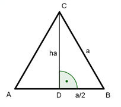

Flächenberechnungen Aufgabe 64 Ein gleichseitiges Dreieck hat einen Umfang von 15 cm. Wie groß sind seine Höhe und die Fläche?  U = 3 * a |:3 U 15 cm a = --- = ------- = 5 cm 3 3 Satz von Pythagoras im Dreieck DBC. a a a² = ha² + (---)² |-(---)² 2 2 a² a² - ---- = ha² 4 25 25 - ---- = ha² 4 ha² = 25 - 6,25 = 18,75 |√ ha = 4,3 cm a * ha 5 cm * 4,3 cm A = -------- = ----------------- = 10,8 cm² 2 2